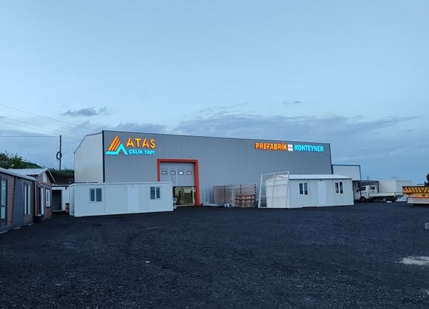
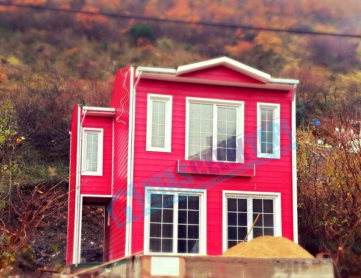

Ataş çelik yapı hafif çelik bükme profil ile oluşturulan panelize taşıyıcı sistem ile inşa edilmektedir.



Çelik ev, prefabrik yapı ve konteyner seçeneklerimizle farklı ihtiyaçlara uygun yapılar sunuyoruz. Menüden tüm ürün yelpazemizi inceleyebilirsiniz.
Modern ve dayanıklı çelik konstrüksiyon ev çözümleri.
Taşınabilir ve pratik konteyner yapı çözümleri.
Sahada monte edilen, modüler ve hızlı kurulum özelliğine sahip yapılardır.

İhtiyaç sahiplerine sıcak yemek hizmeti sunan Süleymanpaşa Belediyesi Aşevi projemizde, hijyenik ve fonksiyonel bir mutfak altyapısı sağladık. Dayanıklı yapı sistemi ve ergonomik tasarımıyla, sosyal destek hizmetlerinin verimli şekilde yürütülmesine katkı sunduk.

Lüleburgaz Su Arıtma Tesisi'nde görev yapan personel için özel olarak tasarlanan konteyner yaşam alanlarıyla, hem konforlu hem de dayanıklı bir barınma çözümü sunuldu. Hızlı kurulum ve yerinde montaj imkanı sayesinde proje, operasyonel verimliliği artırdı.

Betonsa sahasında çalışan personel için hazırlanan yönetim ofisi, iş güvenliği ve personel refahı ön planda tutularak tasarlandı. Isı ve ses yalıtımlı modüler yapılar, zor saha koşullarında dahi konforlu konaklama imkânı sunmaktadır.

Mavi Velimeşe bölgesindeki tesis çalışmalarımız, çevre dostu yapı malzemeleri ve mühendislik çözümleriyle hayata geçirildi. Proje kapsamında, modern üretim alanları ve personel ihtiyaçlarına uygun yapılar başarıyla tamamlandı.
Bazı mevcut ürünlerimizin görselleri aşağıdadır. Tüm projelerimizi ve ürünlerimizi daha detaylı incelemek için "projeler" sayfamızı ziyaret ediniz.
Güler yüzle karşılayıp ürünü tüm ayrıntılarıyla tanıttılar ve gerekli bilgileri verdiler, çok yardımcı oldular. Ayrıca çok istediğim bir hediyeyi de verdiler, beni kırmadılar sağ olsunlar. Güvenilir ve kaliteli bir yer, ben çok memnun kaldım.
Daha önce evimi ATAŞ Çelik Yapı ile yaptırdım, 5 yıldır sorunsuz kullanıyorum. Teşekkürler ATAŞ Çelik Yapı!
Prefabrik evler ve çelik konstrüksiyon yapılar yapan bir firma. Sahipleri büyük küçük demeden her müşteriyle birebir ilgileniyor, çok memnun kaldım.
Ataş çelik yapı hafif çelik bükme profil ile oluşturulan panelize taşıyıcı sistem ile inşa edilmektedir.
Hayır. Ataş çelik yapılarını oluşturan galvanizli sac, uluslararası standartlarda Türkiye'de mevcuttur. Tüm profil bükme işlemi yine Türkiye'de yapılmaktadır. Kullanılan vida, bulon ve diğer bağlantı elemanları, standartlarına uygun olarak Türkiye'de üretilmektedir. Bunun yanısıra dış cephe kaplaması, çatı kaplaması ve diğer malzemeler Türkiye'den temin edilebilmektdir.
Evet. Ataş çelik yapı evleri, betonarme yapılara göre daha hafif olduğu için, deprem kuvvetine daha az maruz kalmaktadır. Çelik yapı elemanları, betonarme gibi kırılgan olmayıp, sünek bir davranış gösterdiği için, deprem kuvvetine daha dayanıklıdr. Ataş çelik yapı evleri, deprem ve rüzgara karşı Türkiye deprem şartnamesi 've uluslar arası şartnamelerin gereklerine göre tasarlanmıştr.
Ataş çelik yapı evlerinde kullanılan kaplama malzemeleri, üretici firmanın verdiği garantiye sahiptir. Çelik konstrüksiyon için yapılan tasarım hesapları, tüm diğer binalarda 60 yıllık ekonomik ömür düşünülürken çelik sistemde 200-300 yıl düşünülmektedr.
Gerekli imar prosedürlerine uygun olduğu sürece, yurtiçi ve yurtdışında istenilen her yere ev yapabilmekteyz.
İsteğe göre PVC, ahşap, alüminyum, demir doğrama vs. istenilen her tür kapı ve pencere doğraması uygulanabilmektedir. isteğe göre pencerelere panjurda eklenebilmektedr.
Kullanılan malzemelerin garantisi, üretici firma tarafından verilmektedir. Çelik ise Erdemir Demir Çelik Fabrikası'nın uluslararası garantisine sahiptir. Ataş çelik yapıevinizin üretim ve montaj hatalarına karşı yürürlükteki mevzuat çerçevesinde garanti vermektedr.
Hayır. Ataş çelik yapı konut sistemleri ile çok farklı projelerde kolaylıkla uygulanabilir. Dilerseniz Ataş çelik yapı projelerinden birisini beğenebilir, yada isteklerinize göre farklı bir proje çizdirebilirsiniz. Bunlarla beraber isterseniz sizin getireceğiniz mimari projede uygulanablir.
Ataş çelik yapı da standart bir uygulamayı tercih etmek zorunluluğu yoktur. Konutu isterseniz her şey dahil olacak şekilde anahtar teslimi alabilirsiniz, isterseniz kaba şeklinde teslimatta talep edebilirsinz.
Hayır. Evinizin temelini isterseniz kendiniz yapabileceğiniz gibi dilerseniz evin temel su başmanına kadar, projelendirilip Ataş çelik yapı tarafından yapılabilmektdir.
Ataş çelik yapı evlerinin fiyatları, sizin seçeceğiniz kaplama malzemelerine göre belirlenmektedir. Eviniz, aynı kalitedeki betonarme bir evde daha ekonomik olacaktr.
Hayır. Yatayda, Ataş çelik yapı Konut Sistemleri, Ataş çelik yapı kontrolünde olmak suretiyle oda ilavesi yapılabilmektedr.
Mimari uygunluğa göre 4 kata kadar mümkündür. En uygun ve ekonomik çözümlere ise 2-3 katta ulaşılmaktadır.
Hayır. Az katlı ticari yapılarda ve küçük ölçekli sanayi yapılarında da kullanılmaktadır. Ayrıca Ataş çelik yapı sistemi, geçici konutlar, şantiye binaları,ön üretimli prefabrik konut ve çok katlı yapılar için rahatlıkla kullanılabilmektdir.
Evinizin büyüklüğü tamamen size bırakılmıştır. Ataş çelik yapı teknolojisi, 40m2 büyüklüğündeki konuttan, 450m2 büyüklüğündeki villaya kadar her büyüklükte eve rahatlıkla uygulanabilmektdir.
Ruhsat alındıktan ve temel betonu tamamlandıktan sonra 45gün içerisinde tamamlanıp teslim edilmektedr.
Ataş çelik yapı evlerinde uluslar arası (AlSI, ASTM, ISO, ve DIN) standartlarına. v.e.. TSE'ye uygun malzeme üreten ve satan firmalardan malzeme temini yapılmaktadr.
Hayır. İnşa edildikten sonra sökülüp, başka bir yere taşınması mümkün değildr.
Sadece taşıyıcı olmayan bölme duvarlarda, Ataş çelik yapı onayı dahilinde değişiklik yapılabilmektdir.
Isıtma sistemi olarak kombi, bulunduğunuz yere göre doğalgaz, LPG veya akaryakıt kullanılabilir, radyatörlere pompalama sistemiyle bacalı yapılan soba ile de tüm binanın ısıtma sorunu giderilebilmektedir. Mekanik ve elektrik tesisat boruları, duvar ve tavan içerisinde proje aşamasında belirlenerek sorunsuz şekilde monte edilebilmektedr.
Evet, isterseniz iç ve dış kaplamasında değişiklikler yapılabilmektedr.
Ataş çelik yapı'nın değerlendirmelerinde taşıyıcı sisteme zarar vermeyecek ve zayıflatmayacak şekilde kapı ve pencere açılabilmektedr.
Evet, şömine ve barbekü, çelik taşıyıcı sistemin etkilenmemesi için gerekli ısı yalıtımı uygulanarak yapılabilmektedr.
Isı yalıtım özellikleri, evinizin yapılacağı yerin iklim özelliklerine göre hesaplanmakta ve duruma en uygun yalıtım malzemeleri kullanılmaktdır.
Firmamızın çalışmakta olduğu bankalar ile olan anlaşması çerçevesinde müşterilerimize kredi olanağı ve %50 Peşin kalan 2 ay vadeli çek ile ödeme imkanı sağlamaktyız.